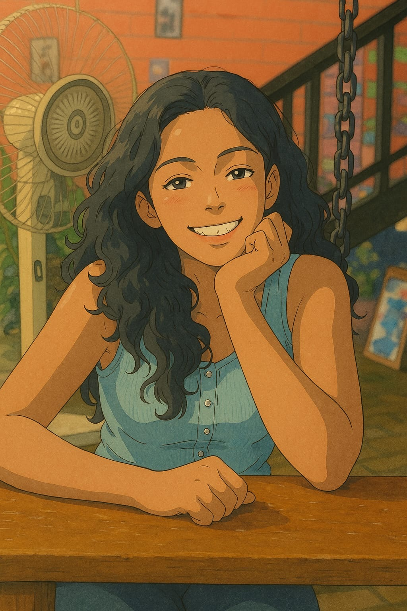

Computational Chemist • PhD Candidate • Machine Learning for Chemistry

I’m a first-year PhD student in the Stratingh Institute of Chemistry at the University of Groningen, working on computational representations of chiral moieties and machine learning models for stereoselective reactions.
I am a Marie Skłodowska-Curie PhD Fellow in the CATALOOP network, working under Dr. Robert Pollice.
Before my PhD, I worked at Aganitha Cognitive Solutions on drug discovery, predictive analytics, and molecular modeling.
Outside of research, I enjoy reading fiction, painting and hiking! Feel free to get in touch and chat if you think I am cool :)
I also, sometimes, write here :)